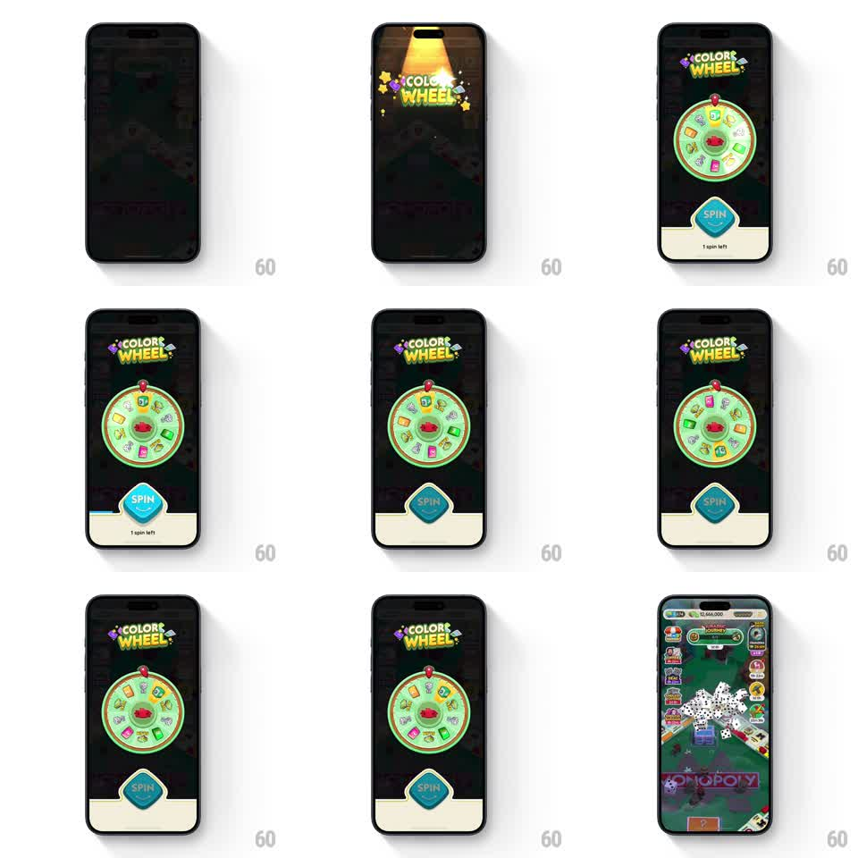

Media
Frame-by-frame

Rebuild this interaction 1:1: Monopoly Go's color wheel - a spotlighted prize wheel that scales in over the dimmed board, spins with a long eased deceleration onto the pointer, and pays out in a burst of cascading dice.

Rebuild this interaction 1:1: Monopoly Go's color wheel - a spotlighted prize wheel that scales in over the dimmed board, spins with a long eased deceleration onto the pointer, and pays out in a burst of cascading dice. ## Integration Integration: stack-agnostic spec - springs given as stiffness/damping, timed motions as duration + curve; map every value to your framework and animation library of choice. ## Scene The game board dims to near-black. A spotlight beam drops from the top as the "COLOR WHEEL" logo (flanked by dice) pops in. The wheel: a green-rimmed disc of colored reward segments (cash, dice, packs) around a red center hub, a red pointer at 12 o'clock. Below: a blue diamond "SPIN" button and "1 spin left" label. Win state: the board returns with white dice cascading across it. ## Motion spec Pattern: spin-the-wheel with eased deceleration and dice payout. - Entry: spotlight sweeps on (200ms), logo pops (scale 0.8 to 1.1 to 1.0, 300ms), wheel scales in from 0.6 with a soft spring (stiffness ~260, damping ~20). - Tap SPIN: the button depresses and the wheel accelerates to full speed (~10 rad/s) in 400ms, holds ~1s, then decelerates over ~2.5s with a strong ease-out - the last two segments crawl past the pointer with tiny back-and-forth ticks. - The pointer flicks (rotates ~20deg and springs back) each time a segment boundary passes under it during the final rotation. - On stop: the winning segment pulses (brightness flash, 2 pulses) and the wheel assembly scales down and fades (300ms). - Payout: the board undims and a burst of ~20 dice showers from the top-center, bouncing once with randomized rotations, then fades. ## Calibration - Deceleration curve is the whole game feel: ease-out with a long tail, never linear. - Pointer flicks only in the slow phase; flicking at full speed reads as vibration. ## Reduced motion Wheel does one fast rotation (600ms) and lands; dice fade in without the shower. ## Don't miss - The board stays dimmed but visible behind the wheel - this is an overlay, not a new scene. - The winning segment must land exactly under the pointer when the wheel stops.